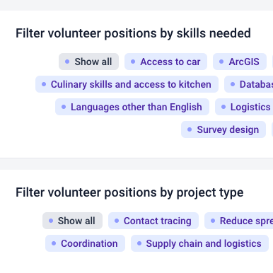
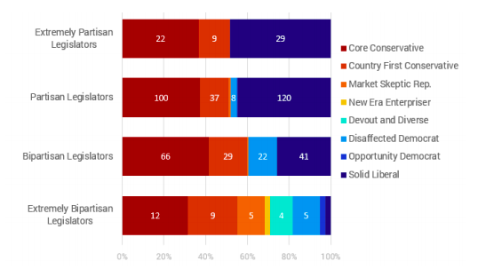
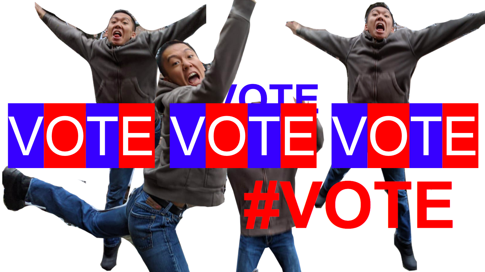

Alex Chen
Hey, I'm Alex! I'm an undergraduate at Yale University studying Computer Science and Ethics, Politics, & Economics.
I develop web and mobile applications with an emphasis on Civic Tech, GovTech, and social impact. I'm interested in software
engineering, product management, human-centered design, and using technology in creative ways to make the world
more kind, more empathetic, and more human.
Want my resume as a PDF?
Experience
Filter by Tag
Digital Services Intern
NYC Mayor's Office of the Chief Technology Officer
Built digital solutions within agile team for NYC government agencies, connecting millions of New Yorkers to
government services. Scoped and developed MVP for
modular open-source translation pipeline for
city agencies, integrating existing open-source translation management systems, designing data
architecture (ERD), conducting user research, and demoing findings to key stakeholders such as the Mayor’s
Office of Immigrant Affairs. Automated Adobe InDesign and Illustrator using ExtendScript to complete project
mapping broadband access by congressional, state legislative, and city council district. Completed accessibility audit
on CTO website based on WCAG guidelines.
May 2020 - August 2020
Simulation Fellow
JURIST Digital Scholars Program and HASH
As a JURIST Digital Scholar and
HASH Fellow for Summer 2020, conducted research culminating in an agent-based
model (ABM) of police organizations and the communities they serve, emphasizing the difference between “a few bad apples” and
actual systemic inequality. Used HASH's JavaScript-based ABM development framework. Presented at UChicago
MSCAPP
Speaker Series. See the model in detail here.
June 2020 - August 2020
App Developer
Yale Student Technology Collaborative
Used Ruby on Rails, React Native, RESTful APIs, and Bootstrap to develop web and mobile apps used by
thousands in the Yale community, with experience in the full Software Development Life Cycle. Currently
working on mobile ridesharing app for Yale students with React Native front-end, Rails back-end.
October 2019 - Present
Undergraduate Learning Assistant
Yale CPSC 223: Data Structures and Programming Techniques
Held office hours and assisted students in writing and debugging C code. Topics included data structures
(arrays, stacks, queues, lists, trees, heaps, graphs), sorting and searching, storage allocation and management,
and data abstraction.
September 2020 - Present
Python Instructor
The Coding School
Taught introductory Python curriculum to underrepresented middle and high schoolers through the codeConnects
platform with The Coding School.
August 2020 - Present
Enumerator
U.S. Census Bureau
Collected household and demographic information by canvassing neighborhood residents.
Interpreted census questionnaire in Mandarin.
July 2020 - September 2020
STEM Intern
Yale Young Global Scholars
Organized pre-college enrichment program by facilitating unique small-group discussions over lunch and dinner and
leading post-lecture breakout sessions. Leveraged Slate and spreadsheet scripts to handle logistical details.
Staffed program office and canteen.
June 2019 - August 2019
Director of Marketing & Graphics
TeenHacks LI
Organized Long Island’s first 24-hour hackathon for high school students, with successful 60-person fall event and
250-person spring event. Designed website, mascot, sponsorship prospects, and other content. Managed all social media
(Facebook, Instagram, Twitter) and sponsor relations.
July 2018 - May 2019
Legislative Intern
Office of NYS Assemblymember Yuh-Line Niou
Researched and composed legislative memos about topics including rent control, public health disparities within
Chinese-American immigrant communities, and the proposed L train shutdown. Aided constituents over the phone,
at mobile district offices, and at events. Automated processes by developing low-maintenance scripts to gather
info (e.g., construction permits).
June 2017 - September 2018
Digital Services Intern
Built digital solutions within agile team for NYC government agencies, connecting millions of New Yorkers to government services. Scoped and developed MVP for modular open-source translation pipeline for city agencies, integrating existing open-source translation management systems, designing data architecture (ERD), conducting user research, and demoing findings to key stakeholders such as the Mayor’s Office of Immigrant Affairs. Automated Adobe InDesign and Illustrator using ExtendScript to complete project mapping broadband access by congressional, state legislative, and city council district. Completed accessibility audit on CTO website based on WCAG guidelines.
Simulation Fellow
As a JURIST Digital Scholar and HASH Fellow for Summer 2020, conducted research culminating in an agent-based model (ABM) of police organizations and the communities they serve, emphasizing the difference between “a few bad apples” and actual systemic inequality. Used HASH's JavaScript-based ABM development framework. Presented at UChicago MSCAPP Speaker Series. See the model in detail here.
App Developer
Used Ruby on Rails, React Native, RESTful APIs, and Bootstrap to develop web and mobile apps used by thousands in the Yale community, with experience in the full Software Development Life Cycle. Currently working on mobile ridesharing app for Yale students with React Native front-end, Rails back-end.
Undergraduate Learning Assistant
Held office hours and assisted students in writing and debugging C code. Topics included data structures (arrays, stacks, queues, lists, trees, heaps, graphs), sorting and searching, storage allocation and management, and data abstraction.
Python Instructor
Taught introductory Python curriculum to underrepresented middle and high schoolers through the codeConnects platform with The Coding School.
Enumerator
Collected household and demographic information by canvassing neighborhood residents. Interpreted census questionnaire in Mandarin.
STEM Intern
Organized pre-college enrichment program by facilitating unique small-group discussions over lunch and dinner and leading post-lecture breakout sessions. Leveraged Slate and spreadsheet scripts to handle logistical details. Staffed program office and canteen.
Director of Marketing & Graphics
Organized Long Island’s first 24-hour hackathon for high school students, with successful 60-person fall event and 250-person spring event. Designed website, mascot, sponsorship prospects, and other content. Managed all social media (Facebook, Instagram, Twitter) and sponsor relations.
Legislative Intern
Researched and composed legislative memos about topics including rent control, public health disparities within Chinese-American immigrant communities, and the proposed L train shutdown. Aided constituents over the phone, at mobile district offices, and at events. Automated processes by developing low-maintenance scripts to gather info (e.g., construction permits).
Projects and Awards
Filter by Tag

Modeling Systemic Inequality
in Law Enforcement
As a JURIST Digital Scholar and
HASH Fellow for Summer 2020, conducted research culminating in an agent-based
model (ABM) of police organizations and the communities they serve, emphasizing the difference between “a few bad apples” and
actual systemic inequality. Used HASH's JavaScript-based ABM development framework. Presented at UChicago
MSCAPP
Speaker Series. See the model in detail here.

Yale Emergency Support (YES) — New Haven Pandemic Task Force
Worked with a 5-person team to develop an emergency pandemic volunteer management and
training web app for the City of New Haven,
matching 500+ users to volunteer opportunities with city government and 20+ New Haven nonprofits. Offered
personalized volunteer training through integration with 3rd-party software and helped expand platform to
Athens, Georgia.
ELSA Localization Pipeline
Scoped and developed the MVP for a modular open-source translation pipeline for
the NYC Mayor's Office of the CTO, integrating existing open-source translation management systems, designing the data architecture (ERD),
conducting user research, and demoing findings to key stakeholders such as the NYC Mayor's Office of Immigrant Affairs.
See letter of reference.

Exploring Bipartisanship in Congress Through Bill Content: A Novel Application of Political Typology
Conducted independent research applying political
typology analysis to the 114th Congress. Named Regeneron STS 2019 Scholar, NYCSEF First Award, and JSHS
Regional Semi-Finalist.

Splash at Yale
Developed and taught classes for middle and high schoolers
through Splash at Yale, with topics
ranging from "Writing from the Margins: Exploring Culture Through Poetry" to "How to Talk About Race Comfortably
and Productively" to "Trust Me, It's Not About Democracy".

Diversity Simulator
Used Unity and C# to create the Diversity Simulator, an agent-based model (ABM) that leverages demographic data
to simulate the process of community-building considering inherent biases based on race, gender, and income class.
See the model in detail here.
Bubbly — YHack 2019 Finalist (Top Five)
Developed a community-building app for mental health with mapping software and augmented reality features.

Poetry Workshops (TEETH Poets)
Regularly hosted poetry workshops
with TEETH Poets for New Haven high schoolers
through the Yale Pathways program.
AtomHacks 2018 Best Computational Hacks Award
Analyzed webpages’ political biases using Java.

Bronx HS of Science National Honor Society Web App
As the Vice President of Technology, streamlined processes and managed all data of a 282-member volunteering and
tutoring organization through G Suite, Google Apps Script, and Dropbox. Additionally, created a web app and
spreadsheet scripts to optimize project assignments, credit tracking, and email management. Started Get Your
Life Together, a community program inviting industry professionals to host workshops for students to explore
potential career paths with a 70-person membership.
Modeling Systemic Inequality
in Law Enforcement
As a JURIST Digital Scholar and HASH Fellow for Summer 2020, conducted research culminating in an agent-based model (ABM) of police organizations and the communities they serve, emphasizing the difference between “a few bad apples” and actual systemic inequality. Used HASH's JavaScript-based ABM development framework. Presented at UChicago MSCAPP Speaker Series. See the model in detail here.
Yale Emergency Support (YES) — New Haven Pandemic Task Force
Worked with a 5-person team to develop an emergency pandemic volunteer management and training web app for the City of New Haven, matching 500+ users to volunteer opportunities with city government and 20+ New Haven nonprofits. Offered personalized volunteer training through integration with 3rd-party software and helped expand platform to Athens, Georgia.
ELSA Localization Pipeline
Scoped and developed the MVP for a modular open-source translation pipeline for the NYC Mayor's Office of the CTO, integrating existing open-source translation management systems, designing the data architecture (ERD), conducting user research, and demoing findings to key stakeholders such as the NYC Mayor's Office of Immigrant Affairs. See letter of reference.
Exploring Bipartisanship in Congress Through Bill Content: A Novel Application of Political Typology
Conducted independent research applying political typology analysis to the 114th Congress. Named Regeneron STS 2019 Scholar, NYCSEF First Award, and JSHS Regional Semi-Finalist.
Splash at Yale
Developed and taught classes for middle and high schoolers through Splash at Yale, with topics ranging from "Writing from the Margins: Exploring Culture Through Poetry" to "How to Talk About Race Comfortably and Productively" to "Trust Me, It's Not About Democracy".
Diversity Simulator
Used Unity and C# to create the Diversity Simulator, an agent-based model (ABM) that leverages demographic data to simulate the process of community-building considering inherent biases based on race, gender, and income class. See the model in detail here.
Bubbly — YHack 2019 Finalist (Top Five)
Developed a community-building app for mental health with mapping software and augmented reality features.
Poetry Workshops (TEETH Poets)
Regularly hosted poetry workshops with TEETH Poets for New Haven high schoolers through the Yale Pathways program.
AtomHacks 2018 Best Computational Hacks Award
Analyzed webpages’ political biases using Java.
Bronx HS of Science National Honor Society Web App
As the Vice President of Technology, streamlined processes and managed all data of a 282-member volunteering and tutoring organization through G Suite, Google Apps Script, and Dropbox. Additionally, created a web app and spreadsheet scripts to optimize project assignments, credit tracking, and email management. Started Get Your Life Together, a community program inviting industry professionals to host workshops for students to explore potential career paths with a 70-person membership.
Skills
- Web App Development (Django, Express, Node.js, MongoDB, Ruby on Rails, React, Bootstrap, HTML, CSS, JavaScript, Python)
- Mobile Development (React Native, Android Studio, Java)
- Game Development (Unity, C#)
- Systems Programming (C)
- Conversational in Mandarin
- Conversational in Hokkien
- Proficient in Latin
- Graphic Design (Adobe Photoshop, Adobe Premiere Pro, Adobe Illustrator, Adobe InDesign)
- Data Analysis (SPSS, Tableau)
Interests
As the co-president of Yale Club Gymnastics, I love attending practices and exploring what it means to build a community. I also write and perform spoken word poetry and teach poetry to middle and high schoolers through Splash at Yale and my poetry group TEETH Poets, and I volunteer as a coding teacher with The Coding School.
In my spare time I enjoy using Adobe Photoshop, Illustrator, Premiere Pro, and Audition to create fun projects, such as editing my family members into wacky scenarios or generating quality content for my five subscribers on YouTube. ♥
My brother as an angel.
My grandma on a surfboard.
Writing Samples
"When discussing the role of human-centered design, agile methodology, and UX research in a company's workflow, the language can be so inundated with buzzwords such that the entire purpose of human-centered design is lost, whether intentionally or otherwise. And when the focus becomes the jargon rather than trying to understand the lived experiences of communities that are harmed by systemic inequalities, this pattern further heightens barriers to entry into the technology industry for those from marginalized communities, and perpetuates a cycle of classism by which only those who are already 'experts' can understand the product development process, which is exactly the opposite of what human-centered design is supposed to accomplish."
Building Products with Empathy: Reconceptualizing the Human-Centered Design Process as an Application of Theories of Personhood (PDF)
"Iep Jaltok bridges the gap between the climate crisis of the Marshall Islands and the actions of institutions like Yale and Harvard, setting forth startling parallels between the historical exploitation of the Marshallese people and the current complicity of Yale and Harvard in funding fossil fuel companies that threaten the very existence of the Marshallese and the livelihood of the Puerto Ricans. Yale and Harvard have a responsibility to divest from these companies, and until they do, increased pressure from student activists appears to be the most effective solution."
More Than a Climate Change Protest: Football, Poetry, and the Marshall Islands (PDF)
Diversity Simulator
The Diversity Simulator, created with Unity and C#, is an agent-based model (ABM) that leverages demographic data to simulate the process of community-building considering inherent biases based on race, gender, and income class. Various modifiable factors influence characters' initial biases along with the relationships eventually formed with those near them.
Instructions are on the top right. Presets are available at the bottom right to simulate historical and geographical situations. Normal distributions are used to model variables like racism, sexism, and elitism. Characters develop and dissuade stereotypes based on those nearby (e.g. being near a likable person of another race would make somebody less racist).
Note that this ABM treats racism, sexism, and elitism as the manifestation of individual-level biases rather than as systemic problems that present themselves through concrete institutional policies. As articulated by Dr. Phillip Atiba Goff, the latter framework is more effective for the purposes of studying and enacting policy changes. Instead, this ABM aims to highlight social dynamics more broadly.
Modeling Systemic Inequality
in Law Enforcement
As a JURIST Digital Scholar and HASH Fellow for Summer 2020, I conducted research culminating in an agent-based model (ABM) of police organizations and the communities they serve, emphasizing the difference between “a few bad apples” and actual systemic inequality. The model consolidates real-life policing and demographic data on the precinct and national levels. Even in this relatively simple model, a pattern of polarization emerges, with "bad" communities getting worse and "good" communities getting better, partially as a direct result of police agents' racial biases.
The goal of this project was to explore what it means for a problem to be systemic, and to set a foundation for further research surrounding structural feedback loops in law enforcement (e.g. hot spots policing, the blue wall of silence, militarization of police forces, the War on Drugs and the definition of a crime, a culture of dehumanization, legal estrangement within civilian communities). Importantly, a glaring gap in existing police research is lack of community involvement — by focusing on agent-level analyses while still incorporating data from studies with more traditional research techniques, I hope to bring greater emphasis to the perspectives and lived experiences of those who have been most impacted by injustice in policing.
I used HASH's JavaScript-based ABM development framework.